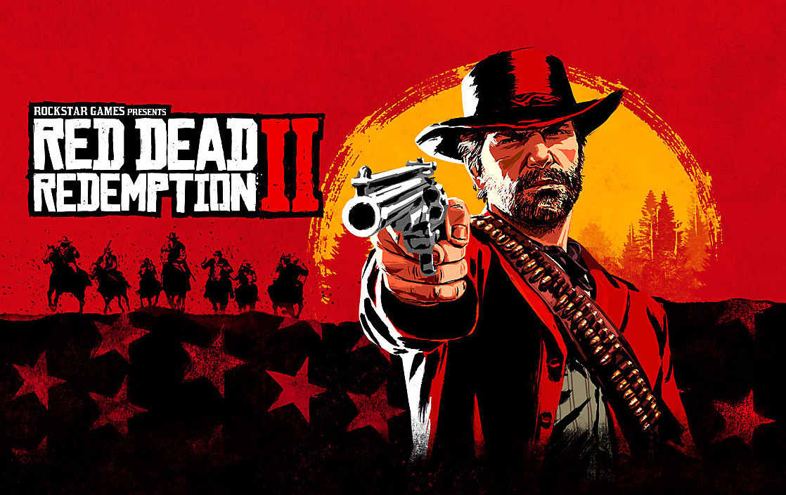

Quais são os 3 melhores jogos?
vou apresentar os 3 melhores jogos na minha opinião.
O mundo dos jogos tem mudado com o tempo, ficando cada vez mais realista e exigente. Hoje, temos jogos que são quase simulações autênticas da vida real.
Porém, hoje não vamos focar apenas nisso, mas também no meu gosto pessoal. Darei notas para (gráficos, campanha, personagens e trilha sonora), além de uma sinopse de cada jogo.
Red Dead Redemption 2 (RDR2)

sinopse: Red Dead Redemption 2 é um jogo de ação e aventura ambientado no ano de 1899. O jogador assume o papel de Arthur Morgan, um membro da gangue Van der Linde, que é forçado a fugir com agentes federais e caçadores de recompensas em seu encalço. O jogo se passa no final do século 19, durante o declínio do Velho Oeste americano.
gráficos: 10/10
campanha: 10/10
personagens: 10/10
Boss: 9/10
trilha sonora: 10/10
The last of us 2 (TLOU)
sinopse:The Last of Us 2 é um jogo de ação e aventura exclusivo para PS4. A história se passa 5 anos após os eventos do primeiro game, quando Ellie e Joel se estabelecem e conquistam uma vida estável, vivendo entre um grupo de sobreviventes. Quando um evento violento acaba com a paz, Ellie embarca em uma jornada para buscar justiça e encontrar um encerramento. Enquanto ela caça todos os responsáveis, ela é confrontada pelas repercussões físicas e emocionais de suas ações
gráficos: 10/10
campanha: 8.8/10
personagens: 9.8/10
Boss: 9/10
trilha sonora: 10/10
bloodborne
sinopse: Bloodborne é um jogo de ação e RPG desenvolvido pela FromSoftware, lançado em 2015 exclusivamente para PlayStation 4. O jogo se passa em uma cidade gótica chamada Yharnam, conhecida por sua atmosfera sombria, mistérios e horrores. O jogador enfrenta seus medos, explora a cidade e busca respostas para os mistérios que a envolvem
gráficos: 9.9/10
campanha: 10/10
personagens: 8/10
Boss: 10/10
trilha sonora: 9.5/10